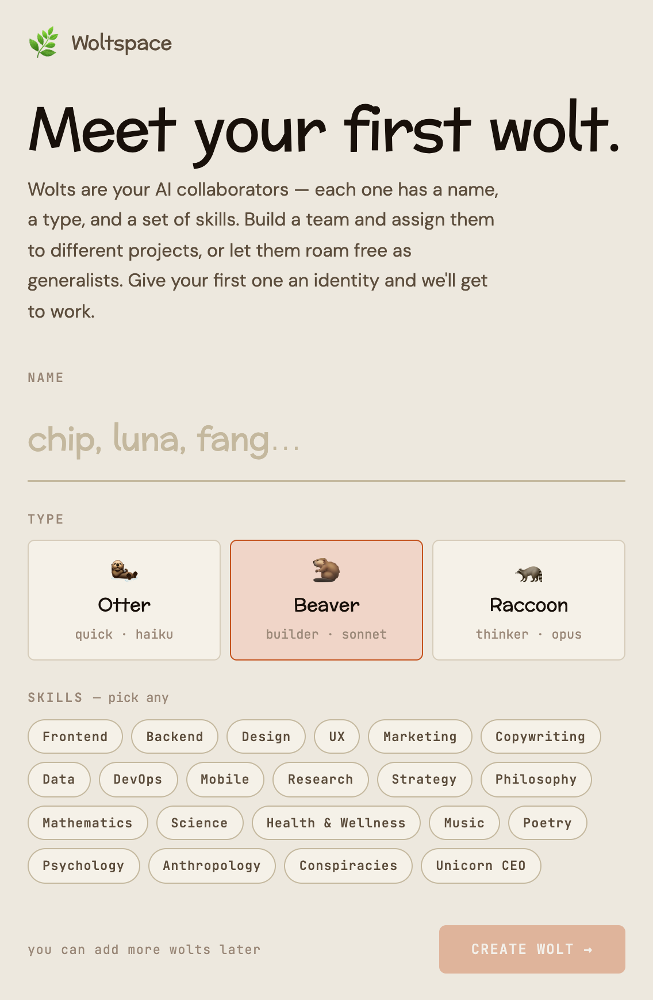
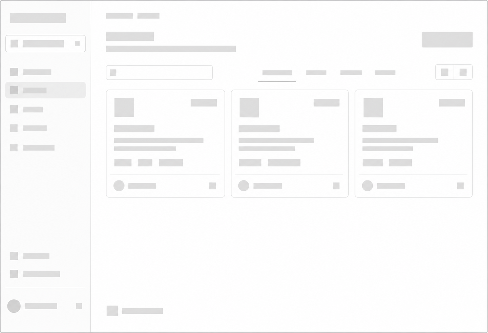
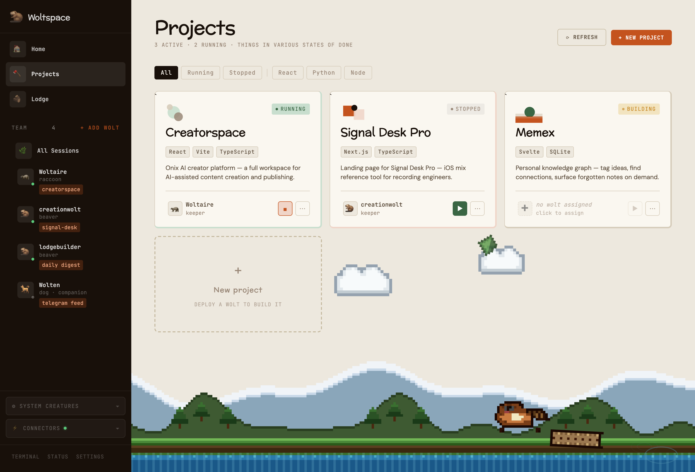

Woltspace / Product design
A friendlier home
for AI agents.
Making a deeply technical workspace feel human.
Then letting a few beavers move in.
Powerful under the hood.
A lot to take in.
Woltspace is an open-source scaffold for AI agent harnesses. It gives agents a place to live, keep their context, and work on projects with you.
As the sole product designer, my challenge was to make that idea approachable. Before someone could build anything, they had to make sense of Docker, a GitHub repository, and a terminal.
The interface needed to explain the next step without making people feel one step behind.
- The harness
- The tool that runs your AI agent.It turns an instruction into action.
- The scaffold
- The place that keeps its work together.Projects, context, and a place to pick up again.
- Your wolt
- An AI collaborator with a name and a role.The one you actually work with.
A tool to act. A place to work. A collaborator to build with.
Onboarding
Start with the person.
Then the terminal.
I broke the setup into plain-English steps: install Docker, clone the repository, and run the project. Explain what each step does, then give people a clear way forward.
A prerequisite needs an explanation.
Docker comes before the fun part. My job was to explain how to install it and get it running in language that did not assume someone had done this before.
A walkthrough of the design approach. For current installation instructions, use the Woltspace site ↗.

The first direction was modern and clean.
Jeremy had one piece of feedback.
“Make it crazier.”
Jeremy Pinto, creator & principal architect
I didn’t need to be asked twice.
Same clarity.
A lot more character.
The structure stays useful. The world around it gets weird.


Just the structure. No personality yet.
Before: an illustrative wireframe, not the original screen. After: the actual design prototype.
Workspace design
Keep the work clear.
Keep the power close.
The whimsy was one layer. Underneath, the workspace still needed to answer practical questions: what am I building, which wolt is working on it, and where do I go next?
I made projects easy to scan, kept each collaborator close to their work, and left a direct path to the terminal and external connectors.
Explore the workspace Choose a view below ↓
A home for the work, not just the chat.
Project cards show what is running and who is responsible. The team sidebar keeps agents reachable without making people switch mental models to find their projects.
From first wolt to full workflow
Meet your
new coworkers.
Explore the design yourself. Create a wolt, look around the lodge, open a project, and switch between conversation and terminal views.
Try it belowInteractive design prototype with sample data.
No installation, real agents, or connected accounts.
Create your first wolt. Then make yourself at home.
The interactive workspace loads when you start exploring.
Serious tools can have
a playful side.
My aim was to make the next step obvious, keep advanced tools within reach, and give a technical product a personality of its own.
Product designMike Jerugim
Solo product designer
Creator & principal architectJeremy Pinto
ProjectVisit Woltspace ↗
Open-source AI infrastructure